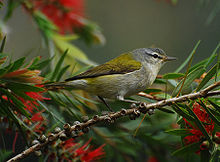
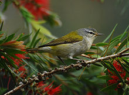

| Tennessee Warbler | |
|---|---|
|  | |
| Conservation status | |
| Binomial name | |
| Oreothlypis peregrina (Wilson, 1811) |
|
| Synonyms | |
|
Helmintophila peregrina |
| Tennessee Warbler | |
|---|---|
|  | |
| Conservation status | |
| Binomial name | |
| Oreothlypis peregrina (Wilson, 1811) |
|
| Synonyms | |
|
Helmintophila peregrina |
The Tennessee Warbler, Oreothlypis peregrina, is a New World warbler. It breeds in northern North America across Canada and the northern USA. It is migratory, wintering in southern Central America and northern Colombia and Venezuela, with a few stragglers going as far south as Ecuador. It is a very rare vagrant to western Europe. This bird was named from a specimen collected in Tennessee where it may appear during migration.
The Tennessee Warbler is 11.5 cm long and weighs 8.5 g. The breeding male is brown above and white below. The head is gray with a white supercilium and black eye stripe.
Females are duller, with a less contrasted head and yellow-tinged under-parts. Non-breeding and young birds are similar to the female, with first-winter birds being particularly yellow below.
The song is a series of musical notes and trills. The call is a sharp sit.
These birds feed on insects in summer, and numbers vary with the availability of Spruce Budworm. In winter they will also eat berries[1] and nectar.
The breeding habitat is coniferous or mixed woodland, especially spruce. Tennessee Warblers nest on the ground, laying 4-7 eggs in a cup nest.

{kind=link}